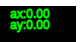
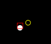

"P" = Toggle Pause | "UP" = +ay | "DOWN" = -ay | "LEFT" = -ax | "RIGHT" = +ax | "C" = Toggle Coordinates
Mouse Left Click, Drag, and Release = Launch Ball
This program simulates balls in motion using the classical physics equations for the position of an object moving at a certain velocity with a constant acceleration.
The motion of the ball is simulated based on gravity and the starting ball velocity and position, and gaussian noise is applied to the position vectors so that they can be used as input for the Kalman Filter algorithm, which can accurately estimate the ball's actual position regardless of the sensor noise.
The Kalman Filter state transition matrix assumes constant and indepent horizontal and vertical acceleration, which makes it interesting to watch how the Kalman Filter estimates react to acceleration being changed in the middle of the algorithm. It seems that the Kalman Filter is able to correct the acceleration and velocity components slowly, but takes even longer to be able to correct the position components, or doesn't at all within a practical amount of time, depending on the R matrix.
The simulation's actual ball position, measurements, and Kalman Filter estimates are all visualized in real time.
Use the UP, DOWN, LEFT, and RIGHT arrow keys on your keyboard to control the gravity.
You can see the current gravity x and y components on the top right corner of the screen.
To create a ball, left click and hold on the black screen with your mouse and create a velocity vector.
Let go of the left mouse button to release the ball with the specified velocity vector.
Notice that the x and y components of the velocity vector are shown in green text.
Multiple balls can be active at the same time.
When the ball is launched you will see the actual ball location as a white filled circle.
The noisy sensor measurement is represented by the hollow yellow circle.
The Kalman Filter estimate is represented by the red square. The width and height of the square are proportional to the current x and y variance.
You can use the number input above to adjust how often the sensor reads the ball's location.
The readings delta seconds are in multiples of 1/60. Please just use integers. For example if you want to read every 1 second, input 60 in the field.
Sensor noise is simulated by sampling from a normal distribution with a mean of 0 and stdev from the field above.
The initial P matrix that is used by the Kalman Filter when a ball is first created and launched.
The R matrix used by the Kalman Filter algorithm.
At any time press the "P" keyboard key to pause the simulation, press "P" again to resume.
You can still launch balls while the simulation is paused. They will start moving once you resume.